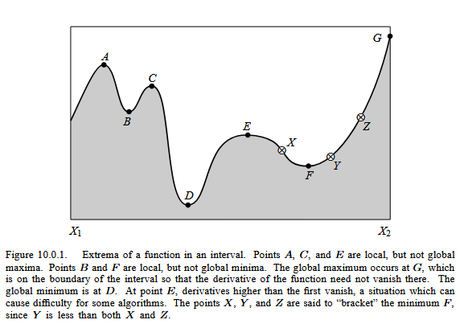
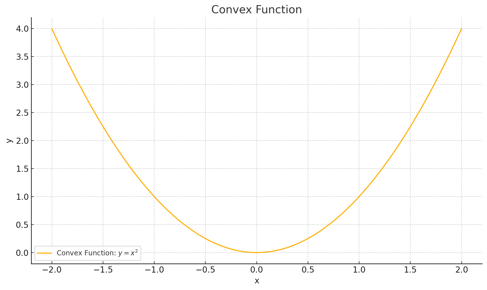
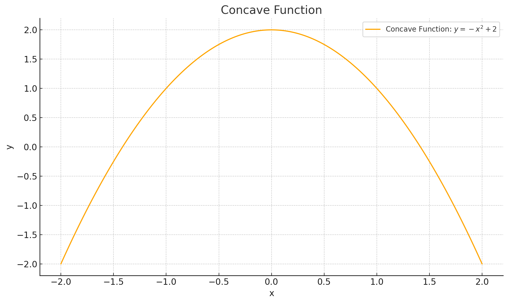

5. Optimization Methods#
Funny numbering because notes reorganized
Optimization is a fundamental component of Machine Learning training. While this section may seem out of place, it is in fact tightly connected to much of what we do in model calibration and training processes.
This will be a very brief introduction to optimization methods, from an Operations Research perspective — which was my minor field during my doctoral studies (back in the 1980s). While the software tools have advanced considerably since then, the underlying conceptual framework remains remarkably stable.
Optimization Modeling#
Most engineering problems have many feasible solutions — outcomes that satisfy all technical and logical requirements. Among those feasible options, we often want to identify the best solution using a performance metric such as cost, weight, efficiency, yield, or some weighted combination of such factors.
We express this goal using two core components:
An objective function — a mathematical expression that quantifies performance or fitness.
A set of constraints — mathematical expressions that enforce design limits, technical requirements, or physical laws.
If a particular design requires time travel, it’s infeasible (circa 2022) and would be excluded before evaluating how “good” it is on other criteria.
Optimization is the process of selecting values for the design variables that:
Minimize or maximize the objective function,
While satisfying all constraints.
Note
Our earlier work on least-squares regression is an example of optimization. The objective function was the sum of squared errors (SSE), and the only constraints were that the \(\beta_i\) coefficients were real numbers — making it an example of unconstrained optimization. :::
Example: Suppose we want the lightest possible bridge that meets all design criteria. The bridge’s weight is the objective function, expressed in terms of the sizes and materials of its components. The constraints are the force and moment balance equations — we still want the bridge to work!
This kind of problem is solved using techniques from mathematical programming.
Warning
In optimization, problem formulation is everything. A poorly formulated problem may produce no solution or misleading results, even when a real-world solution exists. As in engineering problem-solving generally, abstraction and precision in setup are essential — and often learned through experience. :::
Most engineering problems have multiple workable solutions (called feasible solutions). Usually we apply some metric (measurement) of fitness (such as cost, weight, yield, \(\dots\) , or a linear or nonlinear combination of multiple measures) that distinguish one solution from another. If a particular solution requires time-travel, that would be infeasible (circa 2022) and removed from consideration without bothering to determine its fitness in the other measures.
The mathematical expression of fitness is called the objective function (also merit function, cost function, performance function are some other frequently appearing names for the same thing - a measure of how “good” the solution is!). The supporting conditions, conservation laws, capacity restrictions, or other technical limitations that must be satisfied are called constraints (or design requirements, feasibility conditions, auxiliary conditions)
When selecting an optimal solution (or non-inferior solution) we seek design values that minimize or maximize the objective function while simultaneously satisfying all the constraints.
Note
Our least-squares regression analysis that led to the normal equations in line fitting is an example of an optimization problem. The objective function was the SSE, the constraints were mostly that the \(\beta_i\)’s are real valued numbers. This is an example of unconstrained optimization - a valuable subset of the overall optimization process.
For example, suppose we want to determine the lightest weight bridge that will satisfy a given set of design requirements. The objective function is the bridge weight expressed in terms of the dimensions of the structural elements. The constraints will be various force and moment relationships that must be satisfied (we want the bridge to actually work!). A typical problem is to determine the dimensions of the structural elements that will minimize the weight of the bridge, subject to the appliciable constraints. Such problems are known as optimization problems and solutions are found using mathematical programming.
Generally speaking solving linear and non-linear programming problems is relatively straightforward (given the right packages) but the formulation of the problem requires considerable care.
Warning
Recall in our problem solving process, the problem statement was a first step to success - in mathematical programming it is a vital step, and if done haphazardly the program will fail, when the actual problem has a solution. Development of the skill to deal with such an outcome is largely experience based - the abstraction process is also vital here.
Optimization Problem Characteristics#
An optimization problem is written using the following logic.
Find values of the independent (design, policy, or decision are other common names for these variables) variables \(x_1,x_2,\dots,x_n\) that will minimize (or maximize) the objective function \(y=f(x_1,x_2,\dots,x_n)\).
The resulting solutions must also satisfy one or more constraint conditions usually expressed as equations or inequalities as:
\(g_{eq;j}(x_1,x_2,\dots,x_n) = 0\)
\(g_{le;j}(x_1,x_2,\dots,x_n) \le 0\)
\(g_{ge;j}(x_1,x_2,\dots,x_n) \ge 0\)
for \(j=1,2,\dots,m\) where \(m\) is the total number of constraints.
In addition, the permissible values of the independent variables are usually restricted to be non-negative as,
\(x_i \ge 0~\text{for}~~i=1,2,\dots,n\)
A further constraint, common in logistics problems is that the independent variables are integer.
Warning
Optimization problems that are integer constrained are difficult to solve elegantly. Don’t be fooled into thinking that a real-valued solution rounded to the nearest integer is “optimal”; it might not even be feasible. It is a reasonable hack to get started, and often is a good enough approximation - just check that the result is at least feasible before commiting to the solution.
Useful Optimization Jargon#
Functions#
Functions map a relationship between input(s) and output(s)
Functions can be of many types:
Mathematical, logical, rule-based
The mapping of inputs => outputs can be linear or nonlinear
The function can be one-dimensional or multi-dimensional; the inputs can similarily be univariate (one dimension) or multivariate (many dimensions)
Optima#
Optimization means finding either a ‘maximum’ or a ‘minimum’ of a function. The optimum value is typically defined over a range of interest. The figure below is taken from Press, William H.; Teukolsky, Saul A.; Vetterling, William T.; Flannery, Brian P. (1986). Numerical Recipes: The Art of Scientific Computing. 1ed. New York: Cambridge University Press. p. 388 ISBN 0-521-30811-9.

A local maximum occurs when its value is higher than other values in the vicinity; A local minimum occurs when its value is lower than other values in the vicinity. The global maximum is the largest value in the range (a,b); The global minimum is the smallest value in the range (a,b). A Saddle Point Occurs when the value of the function is higher on one side and lower on the other (the slope and curvature are zero at the point)
Convex#
A function is said to be strictly convex when a line connecting any two points of the function lies strictly above the function

A function is convex if the second derivative is greater than or equal 0
Strictly convex if greater than
Concave#
A function is concave function when a line joining any two points lies below the function The second derivative of a concave

A function is concave if the second derivative is greater than or equal 0
Strictly concave if less than
Global vs. Local Optima#
Understanding the difference between global and local optima is essential in real-world optimization.
Global optimum: The best possible value of the objective function over the entire feasible domain.
Local optimum: The best value within a small neighborhood, but possibly worse than the global optimum.
In non-convex problems, local optima may trap search algorithms (e.g., gradient descent). Many techniques in machine learning (like stochasticity or momentum) are designed to help escape poor local optima.
Types of Optimization Problems#
Optimization problems can be classified based on characteristics of the objective function and constraints.
Linear Programming (LP): Both the objective function and all constraints are linear.
Nonlinear Programming (NLP): The objective or one or more constraints are nonlinear.
Integer Programming (IP): Some or all variables are restricted to integer values.
Mixed-Integer Programming (MIP): Combines integer and continuous decision variables.
Convex Programming: A special case of NLP where the objective is convex and the feasible region is a convex set. These are easier to solve and have guaranteed global optima.
Dynamic Programming: Problems broken into stages, each with a decision, especially useful for sequential decision problems.
Stochastic Programming: Incorporates uncertainty in the form of probabilistic constraints or random variables.
Multi-objective Optimization: Optimizes two or more conflicting objectives simultaneously, leading to Pareto-optimal solutions.
Note
In practice, real-world engineering design problems often fall into the nonlinear, mixed-integer, or multi-objective categories.
Practical Advice for Modeling Optimization Problems#
Start simple: Try unconstrained, low-dimensional problems first.
Scale variables: Normalizing helps numerical stability and faster convergence.
Inspect the objective: Is it smooth? Convex? Differentiable? If not, consider derivative-free methods.
Constraint debugging: If the problem appears unsolvable, check for contradictory constraints or infeasible regions.
Plot your function (if you can): Visualization is a great way to build intuition, especially for 1D or 2D problems.
Warning
“Black-box” optimization solvers can give wrong answers if you feed them a poorly posed problem. Always validate feasibility and sanity of the solution!
Common Optimization Algorithms#
Here’s a brief overview of optimization techniques you’ll encounter (and script!):
Gradient-Based Methods#
Gradient Descent / Ascent: Uses first-order derivatives to move in direction of steepest descent/ascent.
Newton’s Method: Uses second derivatives (Hessian) for faster convergence near optima.
Quasi-Newton Methods (e.g., BFGS): Approximates second-order information to improve efficiency.
Derivative-Free Methods#
Nelder-Mead Simplex Method: Explores the solution space using a simplex of n+1 points.
Powell’s Method: Iteratively refines search directions without gradients.
Hooke and Jeeves: Pattern search method alternating exploratory and pattern moves.
Constrained Optimization Techniques#
Penalty and Barrier Methods: Add terms to the objective function to penalize constraint violations.
Lagrange Multipliers / KKT Conditions: Transform constraints into solvable equalities (useful in theory and symbolic solutions).
Global Optimization & Metaheuristics#
Simulated Annealing: Mimics thermodynamic cooling to escape local minima.
Genetic Algorithms: Population-based search using crossover, mutation, and selection.
Particle Swarm Optimization (PSO): Models collective behavior to explore solution space.
Enumeration Methods#
Grid Search: Brute-force; It discretizes the search space and evaluates the objective function at every point in the grid.
Method of Darts: The Method of Darts is a simple but effective stochastic search technique that bears some resemblance to genetic algorithms. It involves throwing “random darts” — that is, sampling points randomly within the search space — and using the outcomes to guide subsequent throws.
A lightweight, implementation-flexible approach is preferred
Tip
You don’t need to master all these, but knowing when to use which class of method is critical. Start simple, and escalate as needed.
Optimization in Machine Learning Training#
In supervised learning, training a model typically means minimizing a loss function:
For regression: Mean squared error (MSE)
For classification: Cross-entropy loss
This minimization is often an unconstrained optimization problem solved using variants of stochastic gradient descent (SGD).
Note
The difference between training accuracy and generalization performance relates to the optimization landscape and how the model parameters traverse it.
Modern optimizers used in ML training:
SGD
Adam
RMSProp
Adagrad
These are specialized gradient-based methods adapted for high-dimensional, noisy, sparse-gradient landscapes.
Quick Reference: Optimization Method Selection#
Problem Type |
Suggested Method |
Notes |
|---|---|---|
Linear + Continuous |
Simplex, Interior-Point |
Fast and robust |
Nonlinear + Smooth |
Gradient-Based |
Requires derivatives |
Noisy / Black-box |
Derivative-Free (e.g., NM) |
Use when derivatives unavailable |
Integer Variables |
Branch and Bound, MIP |
Often slow for large problems |
Global Search |
Genetic Algorithm, PSO |
Computationally expensive |
ML Training |
SGD, Adam |
Scalable to high dimensions |